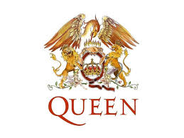

Holala soy Alejandro Silva Juarez y estudio en el CECyT, en esta pagina les presentare
las cosas que me gustan y mis Hobbies
Si quieres saber mas de mis hobbies dale click a los botoncitos que estan arribita
League of Legends
Uno de mis juegos favoritos y los que juego mucho es League of Legends, es un infierno jugar ese juego
pero ya que juego con amigos los unicos que pasan un infierno son ellos porque soy bien malo XD, si quieren saber como
se juega o que es les dejare un video en el que explica que este juego
Dale click aqui :3
Youtube
Me gusta ver videos de muchas cosas, desde ver videos de gatos cayendose
hasta videos de ciencias forenses, tambien tengo un canal de youtube en dodne subo
los modelajes 3D que hago para aprender asi que se los dejare al final de la pagina para que me
sigan :3
Modelo 3D
El modelaje 3D es una de las cosas que mas me gustan y mas
utiles que me puedo hacer como tiempo libre ya que al hacer modelajes 3D puedo
ocuparlos como parte de mi tarea (Cosa que se va a mostrar en el Proyecto Aula :3)
aun asi mis trabajos son muy feos a comparacion de otras personas que se dedican a
hacerlo por lo que sigo mejorando para hacer animacion u hacer juegos con mis propios modelos
podran ver mis modelos en mi pagina de youtube hasta final :3
Musica
Me gusta la musica de todo tipo, jazz, rock, pop, blues, incluso de difente idioma aunque
no sepa que estan diciendo, como por ejemplo musica coreana, china, japonesa, francesa, etc.
Mi banda favorita es Queen ya que son(bueno, eran) muy buenos en banda y su musica era muy original en esa epocca
y creo que por eso me gustan todo tipo de musica.

Comida
La comida que mas me gusta son la tortas de papa, pero siempre si no hay tacos de pastor
o costras de queso, tambien me gusta la comida oriental ya sea kimchi, ramen , dumplings, y tambien comida
europea. Tambien me gusta cocinar y durante las vacaciones intento hacer platillos como por ejemplo, tortas de papa,
tacos, quesadillas y en reposteria hice un pastel y hot cakes :3. Adjunto un video para que vean que como se hacen
(tan buenas )
Dale click aqui:3